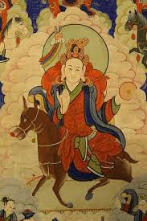

<p><span style="font-size:12px">Губилха часто можно встретить на монгольских и бурятских тханках, где изображены &nbsp;&laquo;пять божеств благополучия&raquo;. Иначе их называют &nbsp;охранительными &nbsp;божествами, на тханке их несколько сразу. &nbsp;В центре изображена Молха, охраняющая левую подмышку ребенка, изображена в свободной позе, одноликая, &nbsp;с двумя глазами, в левой руке она держит , в правой руке у неё стрела для гаданий к оперению которой прикреплены цветные развевающиеся ленты. Цвет тела &nbsp;ее белый. &nbsp;Вахана - коричневый осел, иногда может быть оленуха. &nbsp;Вверху по центру изображен Ваджрапани. Вверху слева - Далха, охраняющий правое плечо ребенка; внизу слева - Юлха, охраняющий голову; &nbsp;внизу справа - Полха, охраняющий правую подмышку; вверху справа - Сроглха, охраняющий сердце. Внизу изображено жертвенное подношение, которое &nbsp;состоит из подношений пяти чувствам, четырех видов животных и зверей. Ландшафтный фон составлен из облаков и холмов.</span></p>
